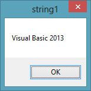
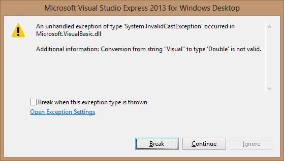
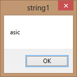

Visual Studio 2013 Lesson 12: Strings Manipulation
[Lesson 11] << [Contents] >> [Lesson 13]
In Visual Studio 2013 , a string is a single unit of data that made up of a series of characters that includes letters, digits, alphanumeric symbols and more. It is treated as the String data type and therefore it is non-numeric in nature which means it cannot be manipulated mathematically though it might consists of numbers.
12.1 String Manipulation Using + and & signs.
In Visual Studio 2013 , strings can be manipulated using the & sign and the + sign, both perform the string concatenation which means combining two or more smaller strings into larger strings. For example, we can join “Visual” ,”Basic” and “2013″ into “Visual Studio 2013 ″ using “Visual”&”Basic” or “Visual “+”Basic”, as shown in the Examples below:
Example 12.1
Dim text1, text2, text3, text4 As String
text1 = “Visual”
text2 = “Basic”
text3=”2013″
text4 = text1 + text2+text3
MsgBox (text4)
End Sub
The line text4=text1+ text2 + text3 can be replaced by text4=text1 & text2 &text3 and produces the same output. However, if one of the variables is declared as numeric data type, you cannot use the + sign, you can only use the & sign.
The output is shown in Figure 12.1:
Figure 12.1
{kind=link}
Example 12.2
Private Sub Button1_Click(ByVal sender As System.Object, ByVal e As System.EventArgs) Handles Button1.Click
Dim text1, text3 as string
Dim Text2 As Integer
text1 = “Visual”
text2=22
text3=text1+text2
MsgBox(text3)
End Sub
This code will produce an error because of data mismatch. The error message appears as follows:
Figure 12.2
{kind=link}
However, using & instead of + will be all right.
Dim text1, text3 as string
Dim Text2 As Integer
text1 = “Visual”
text2=22
text3=text1 & text2
MsgBox(text3)
{kind=link}
Figure 12.3
12.2 String Manipulation Using VB2013 Built-in Functions
A function is similar to a normal procedure but the main purpose of the function is to accept a certain input and return a value which is passed on to the main program to finish the execution.There are numerous string manipulation functions that are built into Visual Basic 2013.
12.2 (a) The Len Function
The Len function returns an integer value which is
the length of a phrase or a sentence, including the empty spaces. The syntax
is
Len (“Phrase”)
For example,
Len (Visual Basic) = 12 and Len (“welcome to VB tutorial”) = 22
Example 12.3
Private Sub Button1_Click(ByVal sender As System.Object, ByVal e As System.EventArgs) Handles Button1.Click
Dim MyText as String
MyText=”Visual Studio 2013 ″
MsgBox(Len(MyText))
End Sub
The output:
{kind=link}
Figure 12.4
12.2(b) The Right Function
The Right function extracts the right portion of a phrase. The syntax for Visual Basic 6 is
Right (“Phrase”, n)
Where n is the starting position from the right of the phase where the portion of the phrase is going to be extracted. For example,
Right(“Visual Basic”, 4) = asic
However, this syntax is not applicable in Visual Basic 2013. In VB2013, we need to use the following syntax
Microsoft.VisualBasic.Right(“Phrase”,n)
The reason of using the full reference is because many objects have the Right properties so using Right on its own will make it ambiguous to Visual Studio 2013 .
Example 12.4
Private Sub Button1_Click(ByVal sender As
System.Object, ByVal e As System.EventArgs) Handles Button1.Click
Dim MyText As String
MyText=”Visual Basic”
MsgBox(Microsoft.VisualBasic.Right(MyText, 4))
End Sub
The above program returns four right most characters of the phrase entered into the textbox.
The Output:
Figure 12.5
{kind=link}
12.2(c)The Left Function
The Left function extract the left portion of a phrase. The syntax is
Microsoft.VisualBasic.Left(“Phrase”,n)
Where n is the starting position from the left of the phase where the portion of the phrase is will be extracted. For example,
Microsoft.VisualBasic.Left (“Visual Basic”, 4) = Visu .
12.2 (d) The Mid Function
The Mid function is used to retrieve a part of text form a given phrase. The syntax of the Mid Function is
Mid(phrase, position,n)
where
phrase is the string from which a part of text is to be retrieved.
position is the starting position of the phrase from which the retrieving process begins.
n is the number of characters to retrieve.
Example 12.5:
Private Sub Button1_Click(sender As Object, e As
EventArgs) Handles Button1.Click
Dim myPhrase As String
myPhrase = InputBox(“Enter your phrase”)
LblPhrase.Text = myPhrase
LblExtract.Text = Mid(myPhrase, 2, 6)
End Sub
* In this example, when the user clicks the button, an input box will pop up prompting the user to enter a phrase. After a phrase is entered and the OK button is pressed, the label will show the extracted text starting from position 2 of the phrase and the number of characters extracted is 6.
{kind=link}
Figure 12.6
12.2(e) The Trim Function
The Trim function trims the empty spaces on both side of the phrase. The syntax is
Trim(“Phrase”)
.For example, Trim (” Visual Basic “) = Visual basic
Example 13.4
Private Sub Button1_Click(ByVal sender As
System.Object, ByVal e As System.EventArgs) Handles Button1.Click
Dim myPhrase As String
myPhrase = InputBox(“Enter your phrase”)
Label1.Text = Trim(myPhrase)
End Sub
12.2(f) The Ltrim Function
The Ltrim function trims the empty spaces of the left portion of the phrase. The syntax is
Ltrim(“Phrase”)
.For example,
Ltrim (” Visual Studio 2013 ″)= Visual Studio 2013
12.2(g)The Rtrim Function
The Rtrim function trims the empty spaces of the right portion of the phrase. The syntax is
Rtrim(“Phrase”)
.For example,
Rtrim (“Visual Studio 2013 “) = Visual Studio 2013
12.2(h) The InStr function
The InStr function looks for a phrase that is embedded within the original phrase and returns the starting position of the embedded phrase. The syntax is
Instr (n, original phase, embedded phrase)
Where n is the position where the Instr function will begin to look for the embedded phrase. For example
Instr(1, “Visual Studio 2013 “,”Basic”)=8
*The function returns a numeric value.
You can write a program code as shown below:
Private Sub Button1_Click(ByVal sender As System.Object, ByVal e As System.EventArgs) Handles Button1.Click
Label1.Text = InStr(1, “Visual Basic”, “Basic”)
End Sub
12.2(i) The Ucase and the Lcase Functions
The Ucase function converts all the characters of a string to capital letters. On the other hand, the Lcase function converts all the characters of a string to small letters.
The syntaxes are
Microsoft.VisualBasic.UCase(Phrase)
Microsoft.VisualBasic.LCase(Phrase)
For example,
Microsoft.VisualBasic.Ucase(“Visual Basic”) =VISUAL BASIC
Microsoft.VisualBasic.Lcase(“Visual Basic”) =visual basic
12.2(j)The Chr and the Asc functions
The Chr function returns the string that corresponds to an ASCII code while
the Asc function converts an ASCII character or symbol to the corresponding
ASCII code. ASCII stands for “American Standard Code for Information
Interchange”. Altogether there are 255 ASCII codes and as many ASCII
characters. Some of the characters may not be displayed as they may
represent some actions such as the pressing of a key or produce a beep
sound. The syntax of the Chr function is
Chr(charcode)
and the format of the Asc function is
Asc(Character)
The following are some examples:
Chr(65)=A, Chr(122)=z, Chr(37)=% ,
Asc(“B”)=66, Asc(“&”)=38
* We shall learn more about functions in later lessons